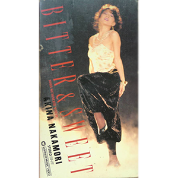

现场视频：第1张
发行年份：1985年
发行日期：12月10日
| 歌名 | 作词 | 作曲 | 编曲 |
|---|---|---|---|
| これからNaturally | SEYMOUR | 三室のぼる | 若草恵 |
| Sand Beige -砂漠へ- | 許瑛子 | 都志見隆 | 井上鑑 |
| Solitude | 湯川れい子 | タケカワユキヒデ | 中村哲 |
| Babylon メドレー / ロマンティックな夜だわ / Relax / Dynamite / Babylon | EPO／Peter Gill・Holly Johnson・Brian Nash・Mark O’Toole／Andrew Goldmark・Bruce Roberts／Sandii | EPO／Peter Gill・Holly Johnson・Brian Nash・Mark O’Toole／Andrew Goldmark・Bruce Roberts／久保田真琴 | 椎名和夫／椎名和夫／椎名和夫／井上鑑・久保田真琴 |
| 予感 | 飛鳥涼 | 飛鳥涼 | 椎名和夫 |
| Dreaming | 斉藤ノブ | 与詞古 | AKAGUY |
| So Long | 角松敏生 | 角松敏生 | 角松敏生・瀬尾一三（弦乐编曲） |
| 十戒 (1984) | 売野雅勇 | 高中正義 | 高中正義・萩田光雄 |
| 飾りじゃないのよ涙は | 井上陽水 | 井上陽水 | 萩田光雄 |
| April Stars | 吉田美奈子 | 吉田美奈子 | 椎名和夫 |
| 赤い鳥逃げた | 康珍化 | 松岡直也 | 松岡直也 |
首发规格：录像带 VHS: 10PV-40, β: 10PX-40
唱片公司：Warner Pioneer
再发行：
1985年12月21日 - LD: 07PL-15
1991年6月12日 - VHS: WPVL-8101, LD: WPLL-8101
2001年4月25日 - DVD: WPB6-90012
2001年11月7日 - DVD: WPB6-90101
2003年11月1日 - DVD: WPBL-90014
2006年6月21日 - DVD: WPBL-90063
2007年1月24日 - DVD: WPBL-90090~4
2014年6月18日 - BD: WPXL-90074
BITTER & SWEET 1985 SUMMER TOUR LD单曲盘
发行：1988年1月25日
规格：LD Single: 30PL-2001
| 歌名 | 作词 | 作曲 | 编曲 |
|---|---|---|---|
| SAND BEIGE -砂漠へ- | 許瑛子 | 都志見隆 | 井上鑑 |
| SOLITUDE | 湯川れい子 | タケカワユキヒデ | 中村哲 |
| 飾りじゃないのよ涙は | 井上陽水 | 井上陽水 | 萩田光雄 |
| 赤い鳥逃げた | 康珍化 | 松岡直也 | 松岡直也 |